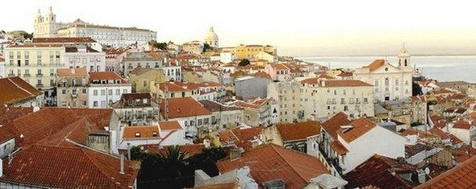
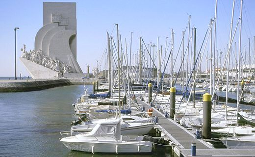

|
Localizacion Lisboa (pronunciación en
portugués: Es la capital1 y mayor ciudad de Portugal. Situada
en la desembocadura del río Tajo, es la capital del país,
capital del distrito de Lisboa, de la región de Lisboa, del
Área Metropolitana de Lisboa, y es también el principal
centro de la subregión de la Gran Lisboa
|
 |
|
 |
Gastronomia La gastronomía de Lisboa está influenciada por su proximidad al mar. Especialidades típicamente lisboetas son las pataniscas de bacalhau y los peixinhos da horta (que son bolitas fritas de habichuelas verde, no es pescado). Se dice que los portugueses, y especialmente los lisboetas, tienen 365 maneras de preparar el bacalao, una receta diferente para cada día del año.Era popular en algunos cafés de tertulia durante la época bohemia unos filetes como el Bife à Marrare. El postre más famoso de Lisboa es el Pastéis de Belém, elaborado en la fábrica más antigua, que se encuentra en la freguesía de Belém. |
|
Sitios Turísticos
Como en todas las ciudades viejas, cada rincón, cada monumento guarda una apasionante historia particular. En Lisboa muchas de estas historias tienen que ver con el mar, con hombres valientes y ambiciosos y reyes conquistadores que hablan de un pasado glorioso. El barrio de Belem, al oeste, guarda fieles testimonios de los tiempos de esplendor de Portugal en la Era de los Descubrimientos. Pero las historias no siempre son color de rosa; el terremoto de 1755 sembró tragedia y destrucción devastando casi completamente la ciudad. Por eso, nada quedó en la Baixa de la vieja Lisboa. La zona fue totalmente reconstruida y los edificios que vemos actualmente datan del siglo XVIII. La vieja Lisboa puede apreciarse en las sinuosas calles de la Alfama, que recuerda los tiempos en que los moros ocuparon la ciudad, mientras que el Bairro Alto exhibe un ambiente pintoresco y familiar, y el contiguo Chiado es un elegante distrito comercial. En las afueras se extiende la Lisboa moderna, especialmente en la zona del Parque das Naçoes. No obstante pueden encontrarse ciertas "joyas" del pasado que merecen una visita. También puedes dar un vistazo a nuestra página sobre los alrededores de Lisboa,en la que ubicamos sobre un mapa interactivo lo mejor del litoral lisboeta. |
 |  |
 |
 | |